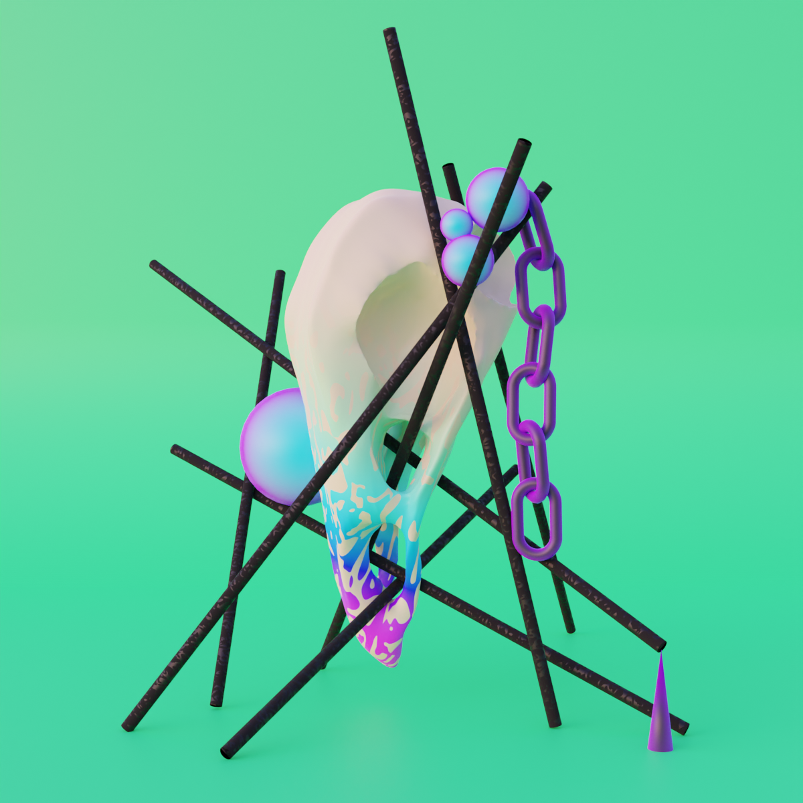
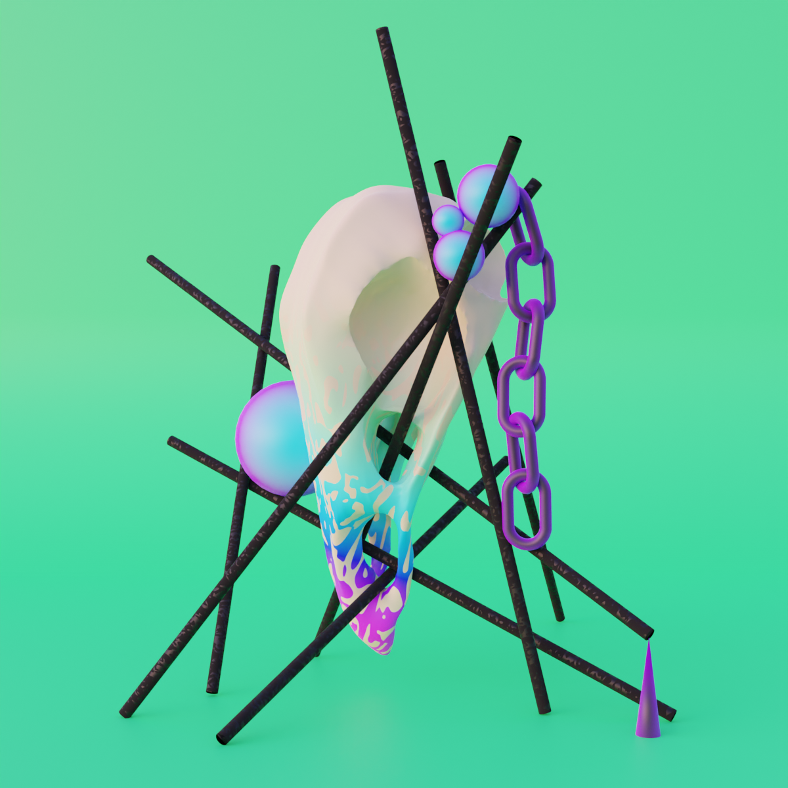
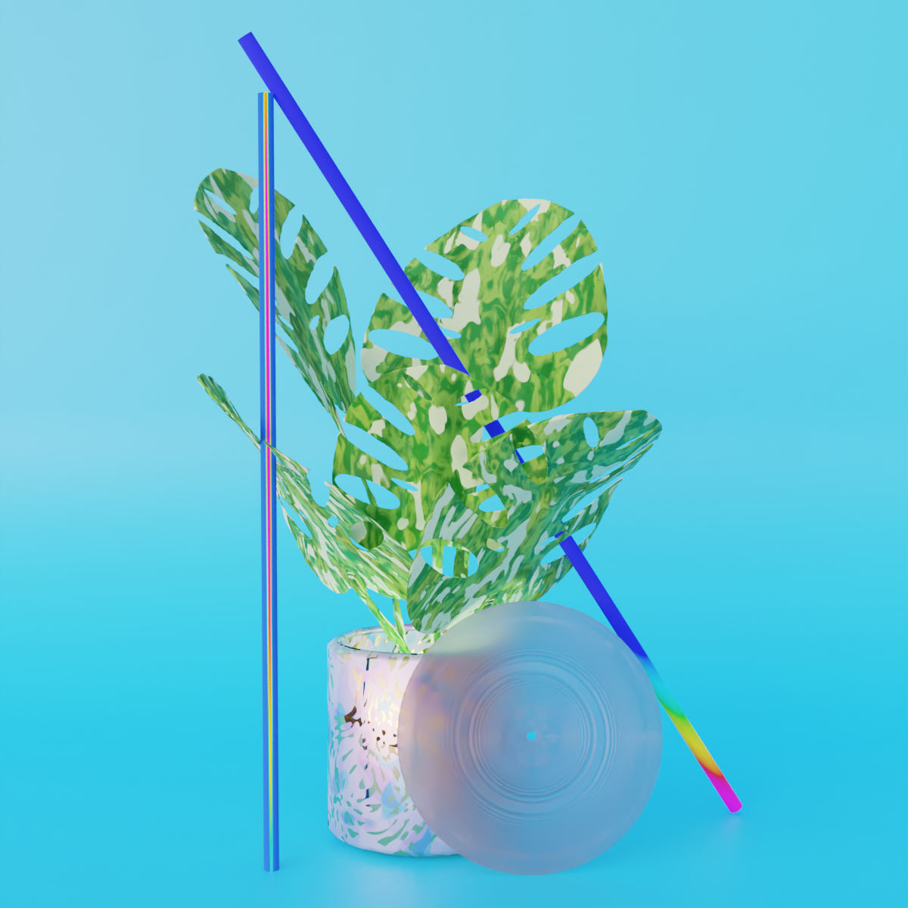
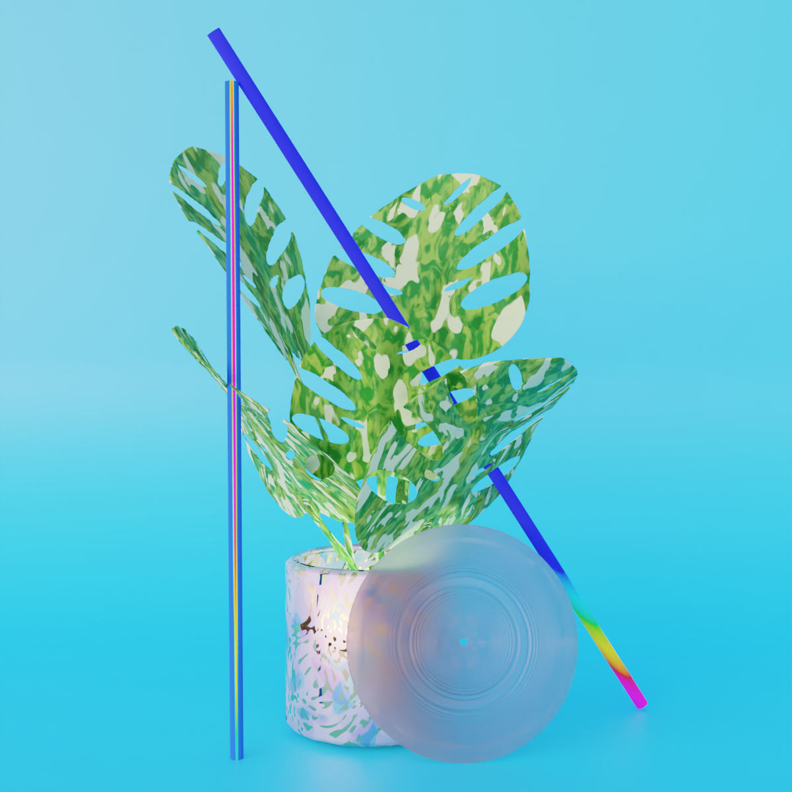
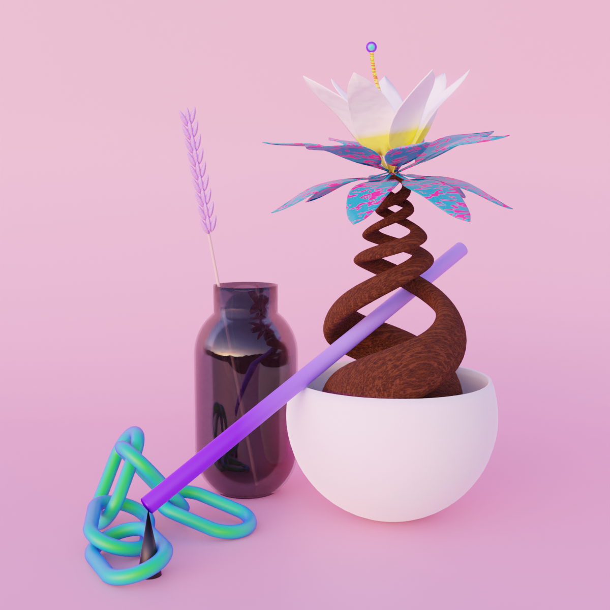
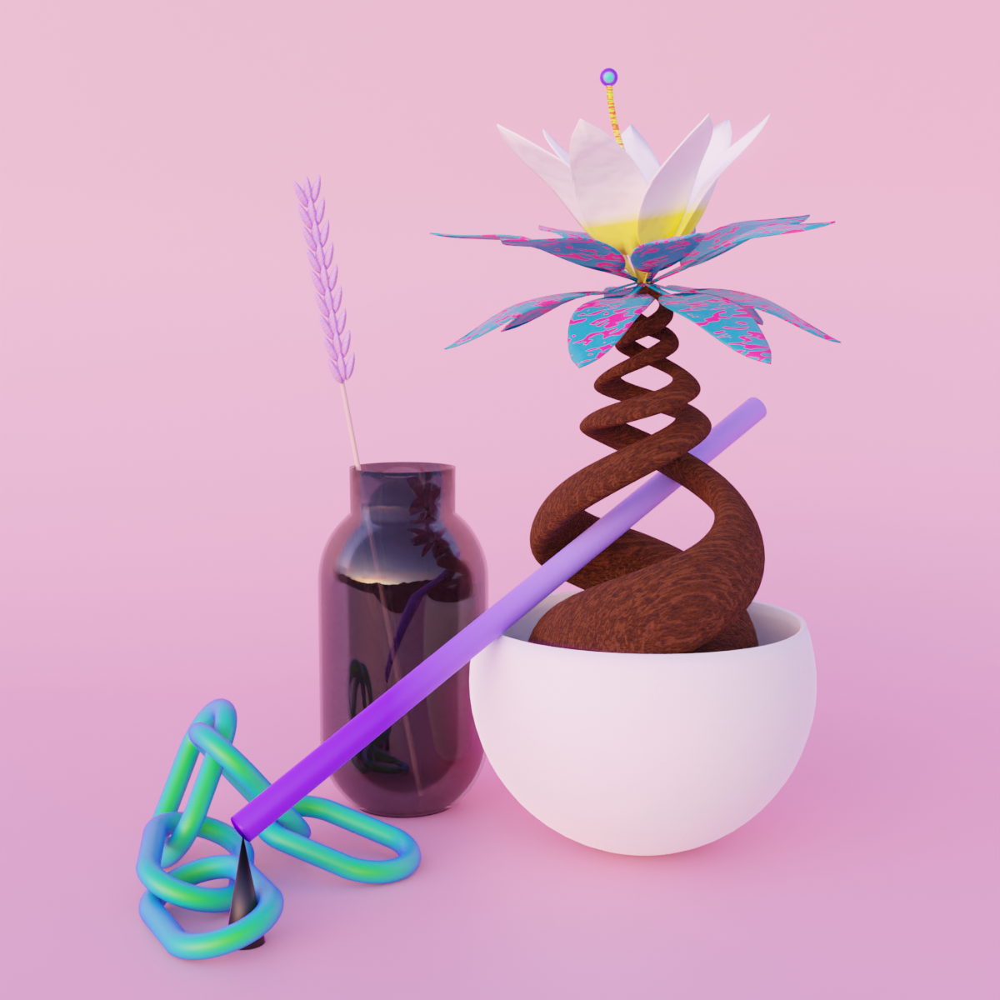

Joe Breda

About Me
I am a final year PhD student advised by Shwetak Patel in the Ubiquitous Computing Lab at the University of Washington Paul G. Allen School of Computer Science and Engineer.
My work is on leveraging ubiqutious technology and artificial intelligence for public health, urbanism, and sustainability. More about my work in the section below.
I got my B.S. in Computer Engineering with a Minor in Computer Science from the University of Massachusetts Amherst where I worked with Jay Taneja, Prashant Shenoy, and David Irwin.
Recent News
- FeverPhone won Distinguished Paper Award at Ubicomp 2024!
- Spent the summer of 2024 deploying smart bicycle sensors in Seattle.
- Thailand Rideshare Study Published in CSCW 2024!
- Traveled to the NIH in DC to conduct a clinical trials, October 2023.
- Traveled to Cancun to present FeverPhone at Ubicomp 2023.
- Traveled to Thailand again to deploy mobile AQI sensors with motorcycle drivers, July 2023.
- FeverPhone Published in IMWUT 2023!
- Traveled to Thailand to conduct qualitative interviews wtih rideshare drivers, August 2022.
- Left my Student Researcher Position at Google, August 2022.
- Spent Summer 2022 part-time at Google and part-time conducting a clinical trial for FeverPhone at UW Northwest Hospital.
Research Interests
I'm broadly interested in using sensing, ubiqutious technology, and artificial intelligence for social good. I am passionate about my work having a positive impact on environmental sustainability, health, and equity of built environments and the societies that occupy them. To do this, I like to build and deploy AI powered sensing on ubiquitous and scalable platforms like smartphones, wearables, and embedded systems.
Most recently, I have built and deployed a suite of smart bicycle sensors with a local active transport activist group to passively crowdsource a measure of cyclist safety across the road network and I have lead a year long clinical influenza challenge study at the NIH to explore how biomarkers measured from wearables can predict illness.
Some Cool Things I've Done During My PhD
During my time as a PhD student I have been fortunate to work on a variety of different applications. Personal Health Sensing: I have run clinical trials using experimental health sensing technology at multiple hospitals including the NIH. Urbanism: I have built and or deployed custom embedded systems for mobile sensing with bicyclist communities in Seattle and Motorcycle Rideshare communities in Bangkok and Chiang Mai. Qualitative Science: I have conducted multiple interview studies with urban populations in Seattle and Thailand. Applied AI: I have explored the use of Satellite imagery for applied computer vision tasks including wildfire prediction at UW and road safety at Google. Interactions: I have built custom wearables and conducted user studies for AI-enabled touch sensing. I have also participated in a number of community based organizations including co-founding and leading the Allen School Graduate Entrepreneurship Club, and helped start and lead the CS4Env cross-department collaborative initiative. I have also helped teach multiple levels of undergraduate and graduate embedded systems courses including embedded capstone.
Personal Interests
I like to make digital art through a number of mediums including computer graphics, illustration software, and electronic music production.
Some things I am particilarly fascinated by are ambient music, harsh noise, procedural graphics, and the design of everyday objects.
I also like bouldering, biking, and supporting local third-places.
Publications
Exploring and characterizing large language models for embedded system development and debugging
Extended Abstracts of the CHI Conference on Human Factors in Computing Systems, CHI LBW 2024 [PDF]
Proceedings of the ACM on Human-Computer Interaction (CSCW), 2024 [PDF]
* Indicates equal contribution
Thermal Earring: Low-power Wireless Earring for Longitudinal Earlobe Temperature Sensing
Proceedings of the ACM on Interactive, Mobile, Wearable and Ubiquitous Technologies (IMWUT), 2024 [PDF]
Proceedings of the ACM on Interactive, Mobile, Wearable and Ubiquitous Technologies (IMWUT), 2023 [PDF]
Won Distinguished Paper Award at Ubicomp 2024
Understanding People's Concerns and Attitudes Towards Smart Cities
Conference on Human Factors in Computing Systems (CHI), 2023 [PDF]
Passively Sensing SARS-CoV-2 RNA in Public Transit Buses
Science of the Total Environment, 2022 [PDF]
Phone-based ambient temperature sensing using opportunistic crowdsensing and machine learning
Sustainable Computing: Informatics and Systems, 2021 [PDF]
Hanging Gardens of Babylon: Reframing Urban Agriculture as an Opportunity for Social Engagement
Self-Sustainable CHI'20 [PDF]
Hot or Not: Leveraging Mobile Devices for Ubiquitous Temperature Sensing
BuildSys'19 [PDF]
Staring at the Sun: A Physical Black-box Solar Performance Model
BuildSys'18 [PDF]
Fancy That: Measuring Electricity Grid Voltage Using a Phone and a Fan
COMPASS'18 [PDF]
Blender Art

 



 

 
